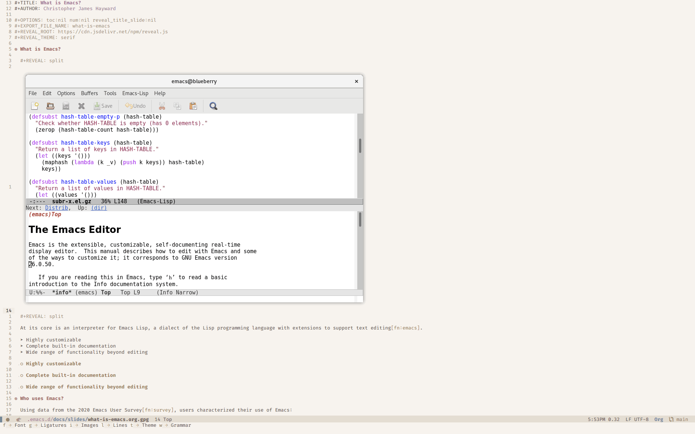
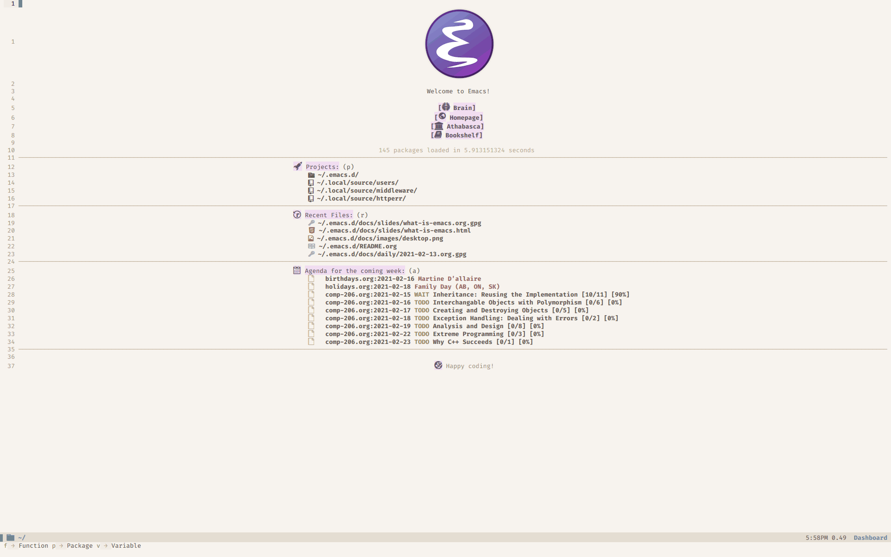
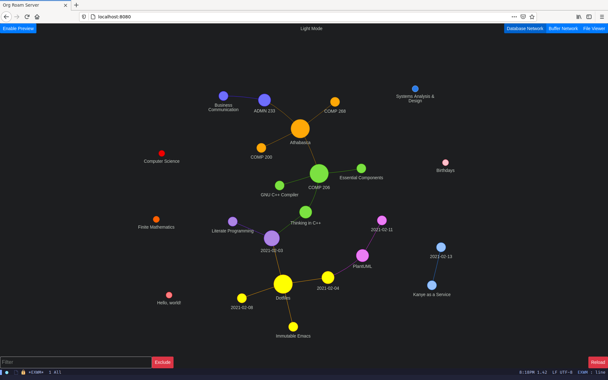

What is Emacs?

At its core is an interpreter for Emacs Lisp, a dialect of the Lisp programming language with extensions to support text editing1.
- Highly customizable
- Complete built-in documentation
- Wide range of functionality beyond editing
Highly customizable
2
Complete built-in documentation
2
Wide range of functionality beyond editing
2